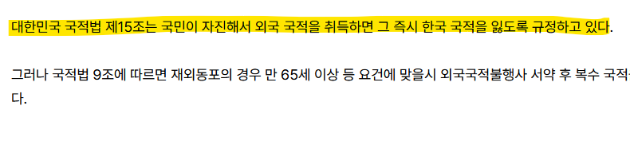
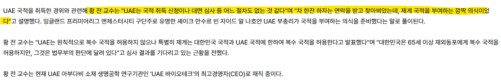

올해 4월 아랍에미리트 국적을 취득하며
한국인이 아니게된 황우석 박사.


미팅하러 갔더니 냅다 UAE 국적을 부여받아버렸고
대한민국 국적법 제 15조로 인해 그 즉시 한국국적이 상실되어버렸음.
이후 복수국적 허용해달라고 국적회복 신청진행중임.
아니 ㅋㅋㅋㅋㅋㅋㅋㅋ 황우석 박사를 떠나서
본인 의사와 상관없이 냅다 국적을 날려버리는게 가능한거였구나 ㅋㅋㅋㅋㅋㅋㅋㅋㅋㅋㅋ
https://m.ytn.co.kr/news_view.php?s_mcd=0103&key=202611100857242550&pos=#return
일단 황박사 주장대로라면 본인의 신청이나 의사개입없이 이미 딸깍 당했고, 의식만 치뤄졌다고 할수있지.
그걸 한국에서 '자진해서' 받아들였구나 라고 판단한거고 ㅇㅇ
사우디나 UAE 같은 왕족사회라서 가능한 일인듯. 절차를 모조리 쌩까고 일단 부여를 한거지.
본인들은 이중국적 허용해줄게! 했으니 괜찮다고 판단한거겠지만 정작 한국에서 국적 박탈사유였던거고 ㅋㅋㅋㅋ